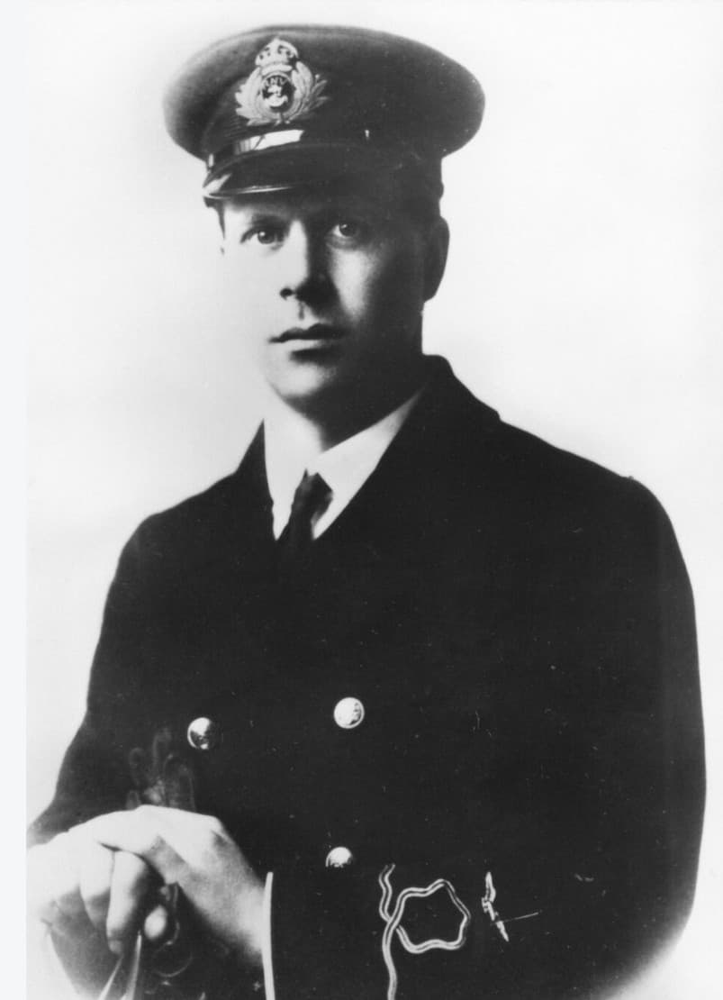
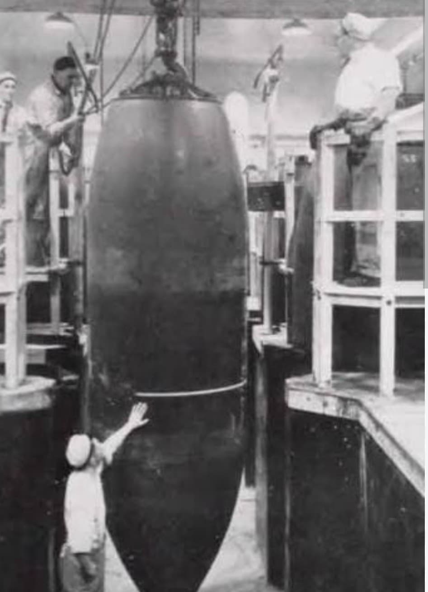
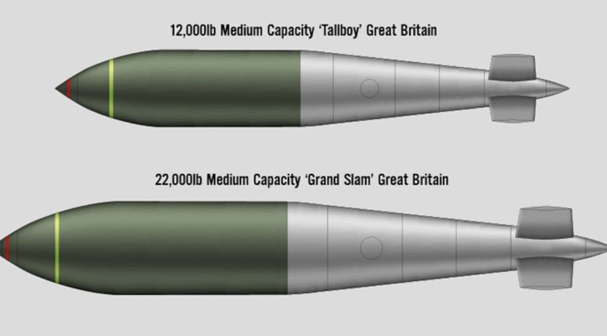
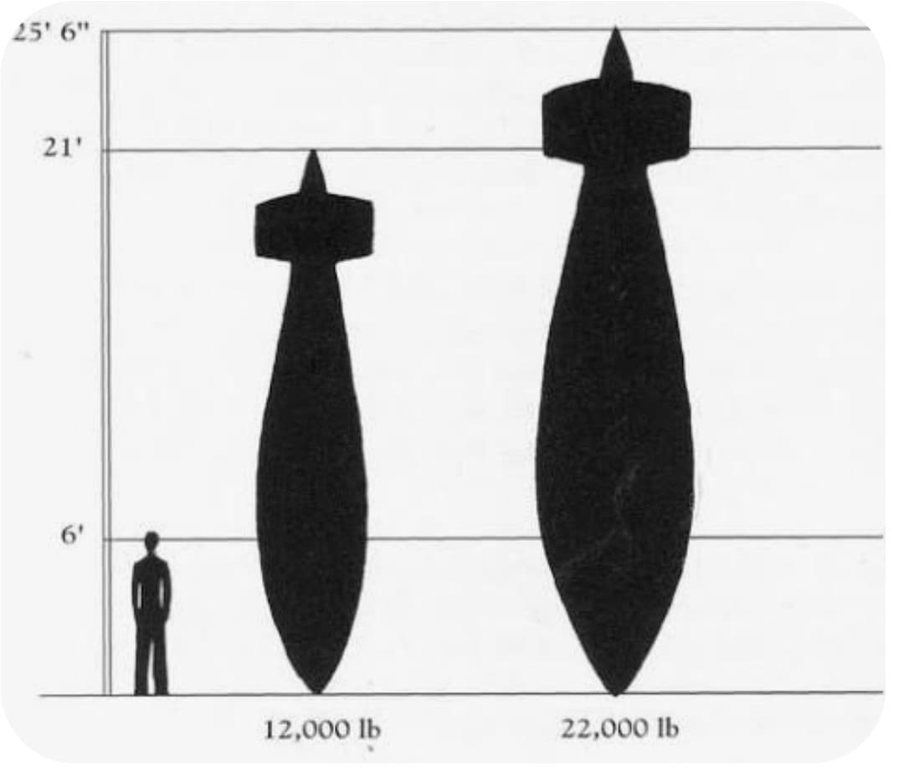

Barnes Neville Wallis (1887–1979) est l’un des ingénieurs les plus influents de la Seconde Guerre mondiale. Concepteur de la bombe rebondissante, de la Tallboy et de la Grand Slam, il révolutionne le bombardement stratégique en inventant des armes capables de détruire des structures massives par effet sismique.

Wallis présente un visage calme, réfléchi, celui d’un ingénieur méthodique. Lunettes rondes, regard concentré, posture sérieuse : il incarne le scientifique plongé dans ses calculs et ses prototypes. Ses photos des années 1940 le montrent souvent penché sur des maquettes ou des schémas techniques.
Wallis développe une idée révolutionnaire : pour détruire des structures massives, il faut frapper en profondeur et transmettre l’énergie dans le sol. De cette logique naissent trois armes majeures :

Bien qu’ingénieur civil chez Vickers, Wallis travaille étroitement avec le RAF Bomber Command. Ses bombes sont larguées par des Avro Lancaster modifiés, capables de transporter des charges extrêmes. Chaque mission Tallboy ou Grand Slam est une opération de haute précision visant une cible unique mais stratégique.

Les bombes de Wallis permettent de neutraliser des infrastructures essentielles du Troisième Reich :
Son travail influence encore aujourd’hui la conception des armes de pénétration modernes.

Barnes Wallis est l’ingénieur qui a transformé le bombardement stratégique en créant des armes capables de frapper en profondeur. Ses bombes Tallboy et Grand Slam ont détruit des cibles majeures du Troisième Reich. Il reste l’un des visages scientifiques les plus importants de la Seconde Guerre mondiale.